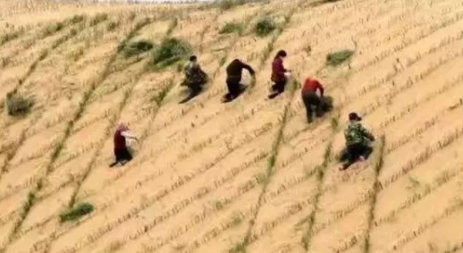
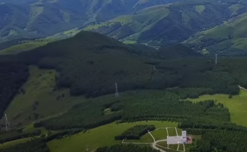

Recovery
Projects

Several large ecological restoration projects had been raised in northern China in recent decades, such as Three-North Shekter Forest Program, combating Desertification Project, and Grain to Green Program.
Similar Example
Saihanba Mechanical Forest Farm
There are still some other successful examples of desert control in China like Hebei Saihanba Mechanical Forest Farm. The Saihanba Mechanical Forest Farm also got notable results.